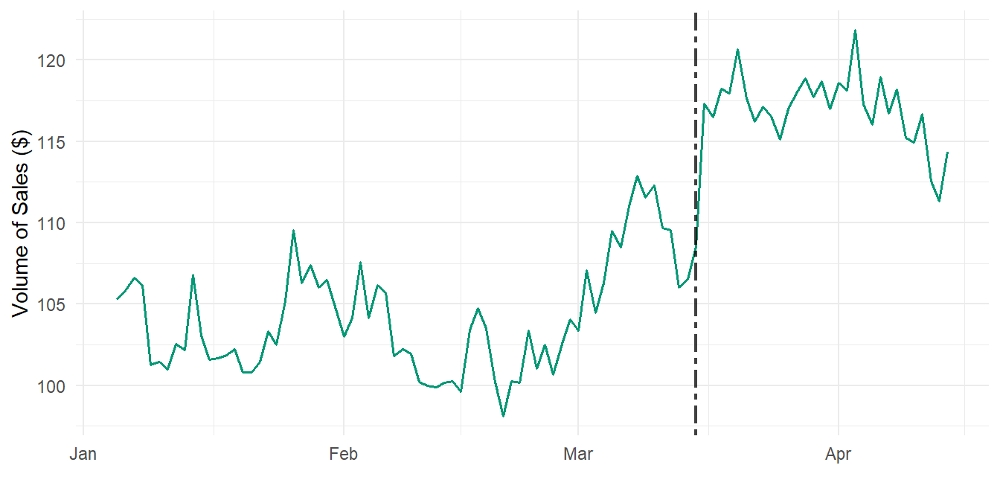
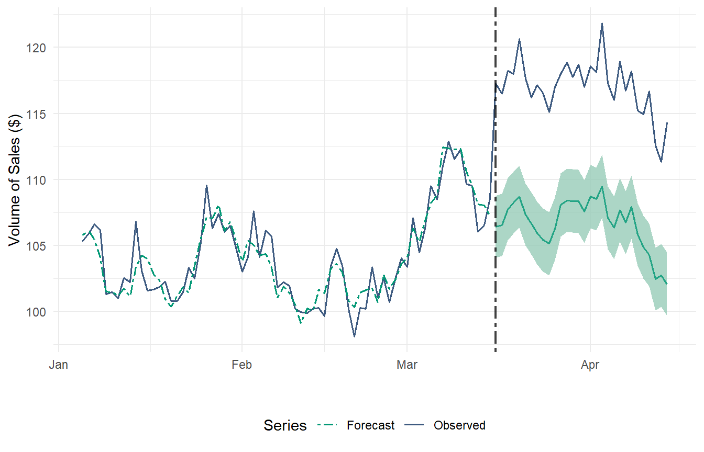
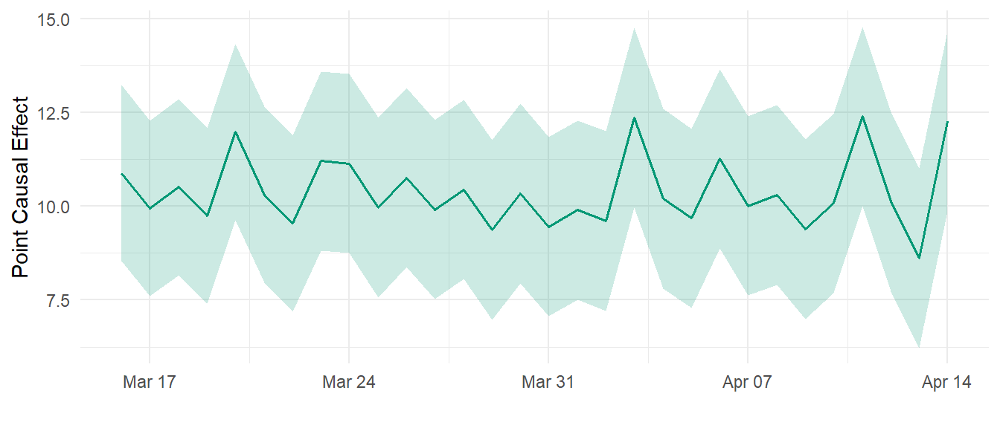
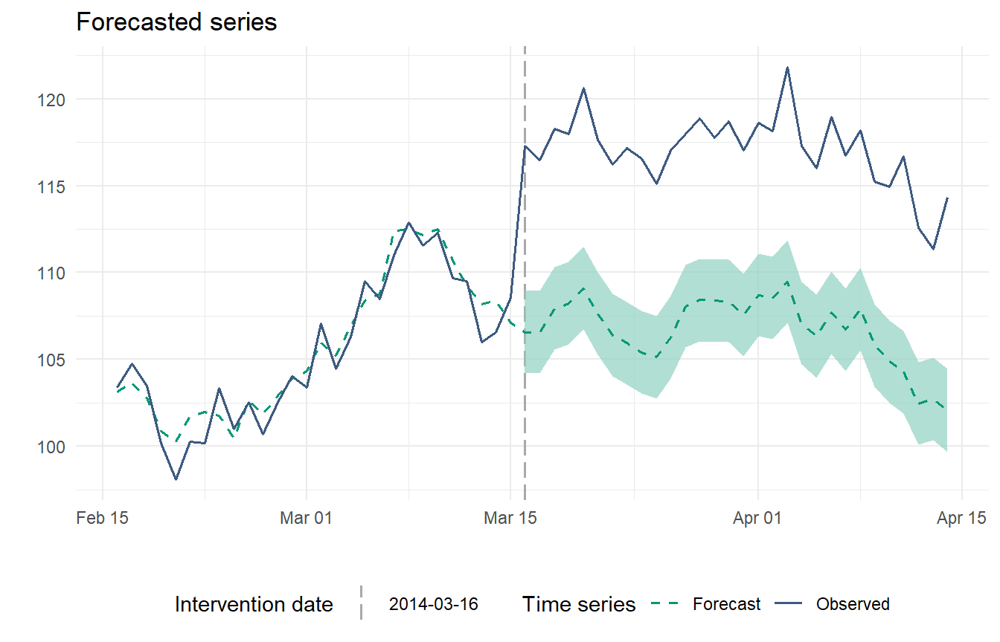
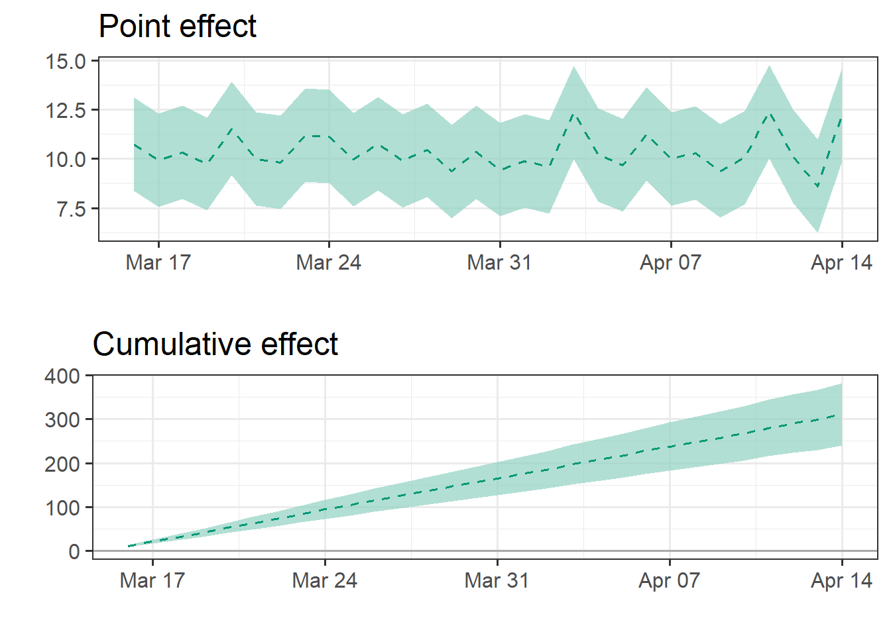
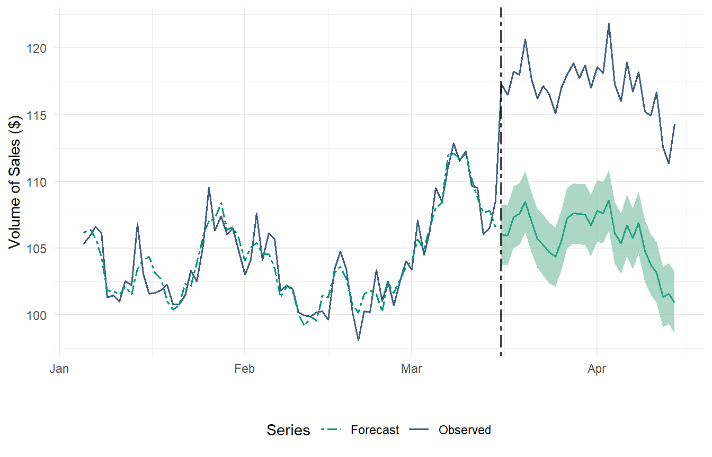
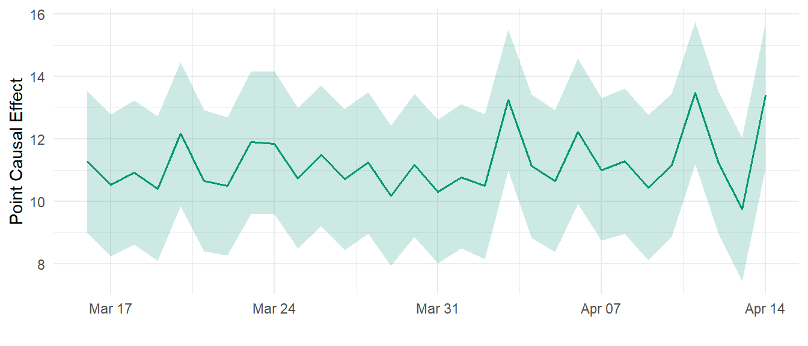

# Simulate data
n <- 100
set.seed(1)
x1 <- 100 + arima.sim(model = list(ar = 0.999), n = n)
y <- 1.2 * x1 + rnorm(n)
y[floor(n * 0.71):n] <- y[floor(n * 0.71):n] + 10
data <- data.frame(y, x1) # Instead of cbind
dates <- seq.Date(from = as.Date("2014-01-05"), by = "days", length.out = n)
start <- as.numeric(strftime(as.Date(dates[1], "%Y-%m-%d"), "%u"))
# Adding a fictional intervention
int.date <- as.Date("2014-03-16")
# Combine data and dates into a dataframe
df <- data.frame(Date = dates, data, stringsAsFactors = FALSE)
# Add day of the week as a column
df$DayOfWeek <- weekdays(df$Date)C-ARIMA to estimate the causal effects in time series settings where no control unit is available.
What is the effect of price reduction on sales? Imagine you are a popular e-commerce platform for books, such as Waterstones. As a part of your marketing strategy, you decide to reduce prices on all books. Now, you’re eager to assess the impact of this decision on the daily volume of sales. How can you measure this effect?
Observational studies such as this pose significant challenges to identifying and estimating causal effects. Unlike A/B testing or randomized experiments, where the assignment mechanism (the process determining which units receive treatment and which receive control) is controlled and known, observational studies lack this clarity.
Popular methods such as Difference-in-Differences (DiD) (Angrist and Pischke 2008) and Synthetic Control Methods (SCM) (Abadie, Diamond, and Hainmueller 2010) have been extensively used to evaluate the impact of interventions in the absence of experimental data across various fields, including economics and marketing. Recent advancements even combine these approaches, as seen in the Synthetic Difference-in-Differences (SDiD) (Arkhangelsky et al. 2019) estimator.
However, these methods require the presence of control units that did not experience the intervention. In cases of widespread policy changes affecting all units—such as our book price reduction example—finding untreated units is often impossible.
On a recent article published in The Econometrics Journal (Volume 26, Issue 1), Menchetti, Cipollini, and Mealli (2022) propose a novel approach, Causal-ARIMA (C-ARIMA), to estimate the causal effect of an intervention in observational time series settings where no control unit is available.
In this post, we will explore how to use C-ARIMA in R estimate the impact of a treatment in settings where no controls or comparisons are available. We will demonstrate that, under certain structural assumptions, the Causal ARIMA approach can effectively recover the average treatment effect, providing insights for decision-making in scenarios where traditional methods may not suffice.
1 Online Book Sales: Simulated Data
We illustrate how the approach can be applied by estimating the causal effect of a permanent price reduction on daily online book sales. I generated a simulated dataset in which we observe a time series of daily sales overtime (y) and additional characteristics summarized in our variable x1.
We turn this into a tsibble object using the tsibble() function from the fable package (Hyndman and Athanasopoulos 2018). This allows us to integrate closely with the tidyverse collection of packages.
df1 <- df %>%
as_tsibble(index = Date)Table 1 shows a glimpse of the dataset:
| Date | y | x1 | DayOfWeek |
|---|---|---|---|
| 2014-01-05 | 105.2950 | 88.21513 | Sunday |
| 2014-01-06 | 105.8943 | 88.48415 | Monday |
| 2014-01-07 | 106.6209 | 87.87684 | Tuesday |
| 2014-01-08 | 106.1572 | 86.77954 | Wednesday |
Figure 1 shows the time series of volume of sales. with the intervention date starting on March 15, 2014:

In this example, appropriate control series could be the sales of products that are not impacted by the ‘price reduction’ policy. However, if all products were impacted by the intervention, finding a valid comparison group becomes challenging.
Let’s also assume all products received the intervention simultaneously, thereby precluding the adoption of the DiD estimators developed under variation in timing. Therefore, in our setting none of the methods mentioned above is applicable.
2 Causal ARIMA Time Series
Autoregressive Integrated Moving Average (ARIMA) models are classic statistical approaches to time series forecasting, when we are usually interested in predicting future scenarios. ARIMA models have desirable properties (tractability, consistency of the estimator of model parameters), and are suited to describe a wide variety of time series generated by complex, non-stationary processes.
In Contrast, C-ARIMA is used to estimate the causal effect of an intervention in observational time series settings under a potential outcomes approach. Therefore, it complements the set of tools for causal inference on observational time series data.
Oftentimes researchers are interested in a cumulative sum of point effects, e.g., Papadogeorgou et al. (2018) focus on estimating the total number of hospital readmissions due to the Hospital Readmission Reduction Program over the entire post-intervention period. Therefore, we also provide test statistics for two additional effects: the cumulative and the temporal average effect.
2.1 Estimation Procedure and Inference
In order to estimate the causal effects with C-ARIMA, we need to follow a three-step process:
- Estimate the ARIMA model only in the pre-intervention period, so as to learn the dynamics of the dependent variable and the links with the covariates without being influenced by the treatment;
- Based on the process learned in the pre-intervention period, perform a prediction step and obtain an estimate of the counterfactual outcome during the post-intervention period in the absence of intervention;
- By comparing the observations with the corresponding forecasts at any time point in the post-intervention period, evaluate the resulting differences, which represent the estimated point causal effects.
Let W_{i,t} ∈ (0, 1) be a random variable describing the treatment assignment of unit i ∈ {1, . . . , N} at time t ∈ {1, . . . , T}, where 1 denotes that a “treatment” (or “intervention”) has taken place and 0 denotes control. Then, our estimands of interest are:
\text{Point Causal Effect: } \tau_t(w,w') = Y_t(w) - Y_t(w') \\ \text{Cumulative Causal Effect: } \Delta_t(w,w') = \sum^{t}_{s+t^*+1} \tau_t(w,w') \\ \text{Average Causal Effect: } \bar\tau_t(w,w') = \frac{\Delta_t(w,w')}{t-t^*}
Then, we have two options to perform inference on the estimated effects: (i) we can rely in the Normality of the error terms, or (ii) we can resort to a Bootstrap Strategy by using resampled residuals in order to compute empirical critical values.
3 Application
3.1 C-ARIMA using fable package
Let’s start by fitting an ARIMA model on our pre-intervention period (between January and March 15):
fit <- df1 |>
filter_index("2014-01-05" ~ "2014-03-15") |>
model(ARIMA(y ~ x1)
)
report(fit) ## ARIMA(0,0,0)(0,0,1)[7]Series: y
Model: LM w/ ARIMA(0,0,0)(0,0,1)[7] errors
Coefficients:
sma1 x1
0.2050 1.1993
s.e. 0.1229 0.0019
sigma^2 estimated as 1.429: log likelihood=-110.95
AIC=227.9 AICc=228.26 BIC=234.64Now we estimate the counterfactual outcome during the post-intervention period in the absence of intervention. For this, we first need to include the post-intervention evolution of the x1 regressor:
df1_x1 <- df1 %>%
select(Date, x1) %>%
filter_index("2014-03-16" ~ "2014-04-14")Now we generate the forecasted values:
# Generate the forecasted values using the fitted model
forecast_result <- forecast(fit, new_data = df1_x1)

Figure 2 provides a graphical representation of the observed time series and the forecasted series in the absence of intervention. At the 1-month time horizon, the causal effect is significantly positive at the 5% level. Additionally, our ARIMA model is able to closely follow the series during the pre-intervention period. We can summarize this fitness level by calculating RMSE and R-Squared scores:
##RMSE & R2_Score
fore1 <- fitted(fit) %>% select(Date, .fitted)
accuracy1 <- df1 %>%
left_join(fore1, by="Date") %>%
filter_index("2014-01-05" ~ "2014-03-15")
RMSE_CARIMA <- RMSE(accuracy1$.fitted, accuracy1$y)
R2_CARIMA <- R2_Score(accuracy1$.fitted, accuracy1$y)Pre-Intervention RMSE: 1.178076 Pre-Intervention R-Squared: 0.8794006 3.1.1 Point Causal Effects
The point causal effect at time t can be estimated with the following code:
ATE_df <- df1 %>%
filter(Date >= ymd("2014-03-16") & Date <= ymd("2014-04-14"))
# Point Effect
point_effect <- ATE_df$y - forecast_result$y
# Calculate the point estimate
point_estimate <- mean(point_effect)
# Calculate the lower bound of the 95% confidence interval
lower_bound <- quantile(point_effect, 0.025)
# Calculate the upper bound of the 95% confidence interval
upper_bound <- quantile(point_effect, 0.975)
# Create a data frame
causal_effect_df <- data.frame(
Date = ATE_df$Date,
Point_Estimate = point_estimate,
Lower_Bound = lower_bound,
Upper_Bound = upper_bound
)

In Figure 3 we observe that the impact of the price policy change is quite constant in time, around $10.
3.1.2 Average Causal Effects
The temporal average effect indicates the number of additional books sold daily, on average, due to the permanent price reduction. We also want to do some inference, standard errors and confidence intervals. A confidence interval gives an interval within which we expect y_t to lie with a specified probability. For example, assuming that distribution of observations is normal, a 95% prediction interval for the h- step forecast is:
\hat{y}_{T+h|T} ± (1.96) \hat \sigma_h
Let’s code this:
# Calculate the point estimate
average_treatment_effect <- mean(point_estimate)
# Standard error of the point estimates
variance_point_effect <- distributional::variance(point_effect)
standard_deviation <- sqrt(variance_point_effect)
standard_error <- standard_deviation / sqrt(length(point_effect))
# Confidence interval for the average treatment effect
ci_lower <- average_treatment_effect - 1.96 * mean(standard_error)
ci_upper <- average_treatment_effect + 1.96 * mean(standard_error)Average Causal Effect: 10.39115 Standard Error: 0.2217059 95% Confidence Interval: [ 9.956609 , 10.8257 ]3.1.3 Bootstrapped Confidence Intervals
When a normal distribution for the residuals is an unreasonable assumption, one alternative is to use bootstrapping, which only assumes that the residuals are uncorrelated with constant variance. This is easily achieved by simply adding bootstrap=TRUE in the forecast() function.
forecast_result <- forecast(fit, new_data = df1_x1, bootstrap=TRUE)
# Point Effect
point_effect <- ATE_df$y - forecast_result$y
# Calculate the point estimate
point_estimate <- mean(point_effect)
# Calculate the point estimate
average_treatment_effect <- mean(point_estimate)
# Standard error of the point estimates
variance_point_effect <- distributional::variance(point_effect)
standard_deviation <- sqrt(variance_point_effect)
standard_error <- standard_deviation / sqrt(length(point_effect))
# Confidence interval for the average treatment effect
ci_lower <- average_treatment_effect - 1.96 * mean(standard_error)
ci_upper <- average_treatment_effect + 1.96 * mean(standard_error)Average Treatment Effect: 10.38964 Standard Error: 0.2178212 95% Confidence Interval: [ 9.962708 , 10.81657 ]The results are quite similar in this case.
3.2 The CausalARIMA Package
The authors of the paper are developing an R package called CausalArima for easier and faster application of the proposed method. The development version of the package can be accessed from https://github.com/FMenchetti/CausalArima.
Let’s see how it works:
# install.packages("tidybayes")
#devtools::install_github("FMenchetti/CausalArima")
library(CausalArima)# Causal effect estimation
# fit the model - Causal effect estimation
ce <- CausalArima(y = ts(y, start = start, frequency = 1),
dates = dates,
int.date = int.date,
xreg =x1,
nboot = 1000)How to obtain the plot of the forecast:

impact_p <- plot(ce, type="impact", color_line=mycolors[1], color_intervals="#91D1C2B2")
grid.arrange(impact_p$plot, impact_p$cumulative_plot)
3.2.1 Inference
Doing inference with this package is straightforward, with the options of using the normality assumption or the bootstrap alternative:
summary(ce)
Point causal effect 12.257
Standard error 1.211
Left-sided p-value 1
Bidirectional p-value 0
Right-sided p-value 0
Cumulative causal effect 310.709
Standard error 6.634
Left-sided p-value 1
Bidirectional p-value 0
Right-sided p-value 0
Temporal average causal effect 10.357
Standard error 0.221
Left-sided p-value 1
Bidirectional p-value 0
Right-sided p-value 0 summary_model <- impact(ce, format="html")summary_model$impact_norm$average| estimate | sd | p_value_left | p_value_bidirectional | p_value_right |
|---|---|---|---|---|
| 10.357 | 0.221 | 1 | 0 | 0 |
summary_model$impact_boot$average| estimates | inf | sup | sd | |
|---|---|---|---|---|
| observed | 117.049 | NA | NA | NA |
| forecasted | 106.692 | 106.264 | 107.142 | 0.222 |
| absolute_effect | 10.357 | 9.907 | 10.784 | 0.222 |
| relative_effect | 0.097 | 0.093 | 0.101 | 0.002 |
4 Causal Prophet
So far, we have learned how to apply this framework using ARIMA models to identify causal effects.
However, this approach can be generalized beyond ARIMA models to include other methods such as Neural Networks, Random Forest, and Exponential Smoothing.
A recent proposal is the Prophet model, available via the fable.prophet package. This model was introduced by Facebook (Taylor and Letham 2018), originally designed for forecasting daily data with weekly and yearly seasonality, including holiday effects. It has since been extended to accommodate various types of seasonal data. The Prophet model works best with time series that exhibit strong seasonality and have multiple seasons of historical data.
We can use the same estimation procedure explained in the previous section, but replacing ARIMA() with the prophet() function:
#install.packages("fable.prophet")
library(fable.prophet)fit <- df1 |>
filter_index("2014-01-05" ~ "2014-03-15") |>
model(
prophet(y ~ x1 + season(period = 1, order = 2)
)
)# Generate the forecasted values using the fitted model
forecast_result <- forecast(fit, new_data = df1_x1)

##RMSE & R2_Score
fore1 <- fitted(fit) %>% select(Date, .fitted)
accuracy1 <- df1 %>%
left_join(fore1, by="Date") %>%
filter_index("2014-01-05" ~ "2014-03-15")
RMSE_CARIMA <- RMSE(accuracy1$.fitted, accuracy1$y)
R2_CARIMA <- R2_Score(accuracy1$.fitted, accuracy1$y)Pre-Intervention RMSE: 1.167918 Pre-Intervention R-Squared: 0.8814713 4.0.1 Point Causal Effects
ATE_df <- df1 %>%
filter(Date >= ymd("2014-03-16") & Date <= ymd("2014-04-14"))
# Point Effect
point_effect <- ATE_df$y - forecast_result$y
# Calculate the point estimate
point_estimate <- mean(point_effect)
# Calculate the lower bound of the 95% confidence interval
lower_bound <- quantile(point_effect, 0.025)
# Calculate the upper bound of the 95% confidence interval
upper_bound <- quantile(point_effect, 0.975)
# Create a data frame
causal_effect_df <- data.frame(
Date = ATE_df$Date,
Point_Estimate = point_estimate,
Lower_Bound = lower_bound,
Upper_Bound = upper_bound
)

4.0.2 Average Causal Effects
# Calculate the point estimate
average_treatment_effect <- mean(point_estimate)
# Standard error of the point estimates
variance_point_effect <- distributional::variance(point_effect)
standard_deviation <- sqrt(variance_point_effect)
standard_error <- standard_deviation / sqrt(length(point_effect))
# Confidence interval for the average treatment effect
ci_lower <- average_treatment_effect - 1.96 * mean(standard_error)
ci_upper <- average_treatment_effect + 1.96 * mean(standard_error)Average Treatment Effect: 11.22149 Standard Error: 0.2129367 95% Confidence Interval: [ 10.80413 , 11.63884 ]In the end, we found a slightly higher average causal effect compared to C-ARIMA, but really similar in terms of economic significance.
5 Conclusion
In this article, we demonstrated how to estimate the causal effect of interventions using the Causal-ARIMA approach, a useful methods for when control groups are not available. We applied this method to a simulated dataset, showing the impact of a permanent price reduction on daily online book sales.
Additionally, we explored the potential for generalizing this framework to other time series models, including the Prophet model. These tools provide novel solutions for causal inference in observational studies, with many potential applications.
References
Abadie, Alberto, Alexis Diamond, and Jens Hainmueller. 2010. “Synthetic Control Methods for Comparative Case Studies: Estimating the Effect of California’s Tobacco Control Program.” Journal of the American Statistical Association 105 (490): 493–505. https://doi.org/10.1198/jasa.2009.ap08746.
Angrist, Joshua D., and Jörn-Steffen Pischke. 2008. “Mostly Harmless Econometrics,” December. https://doi.org/10.2307/j.ctvcm4j72.
Arkhangelsky, Dmitry, Susan Athey, David Hirshberg, Guido Imbens, and Stefan Wager. 2019. “Synthetic Difference in Differences.” https://doi.org/10.3386/w25532.
Hyndman, Rob J, and George Athanasopoulos. 2018. Forecasting: Principles and Practice. OTexts.
Menchetti, Fiammetta, Fabrizio Cipollini, and Fabrizia Mealli. 2022. “Combining Counterfactual Outcomes and ARIMA Models for Policy Evaluation.” The Econometrics Journal 26 (1): 1–24. https://doi.org/10.1093/ectj/utac024.
Taylor, Sean J., and Benjamin Letham. 2018. “Forecasting at Scale.” The American Statistician 72 (1): 37–45. https://doi.org/10.1080/00031305.2017.1380080.